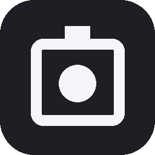
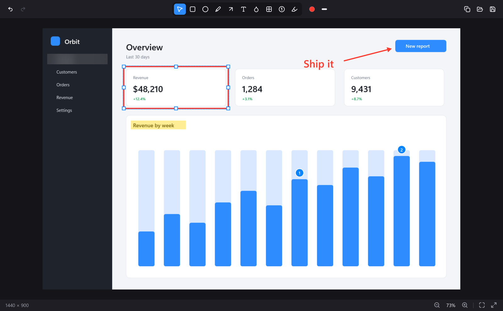
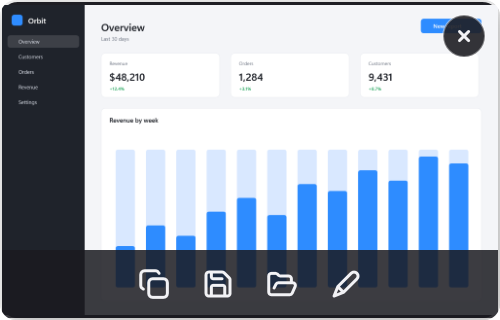

NeatShotA screenshot tool for Windows in the spirit of CleanShot X. One shortcut, a card in the corner, an editor that keeps every annotation editable.


Capture
NeatShot freezes the desktop before it draws the overlay, so what you select is exactly what you get. Every monitor gets its own DPI correct overlay.
The monitor under the cursor, instantly.
Hover snaps to windows. Click to take the one you want.
Drag a rectangle. The size follows the cursor as you go.
Quick access
Editor
Move it, resize it, change its color or line width, double click text to rewrite it. Drag something past the edge and the canvas grows with it. Undo is unlimited.